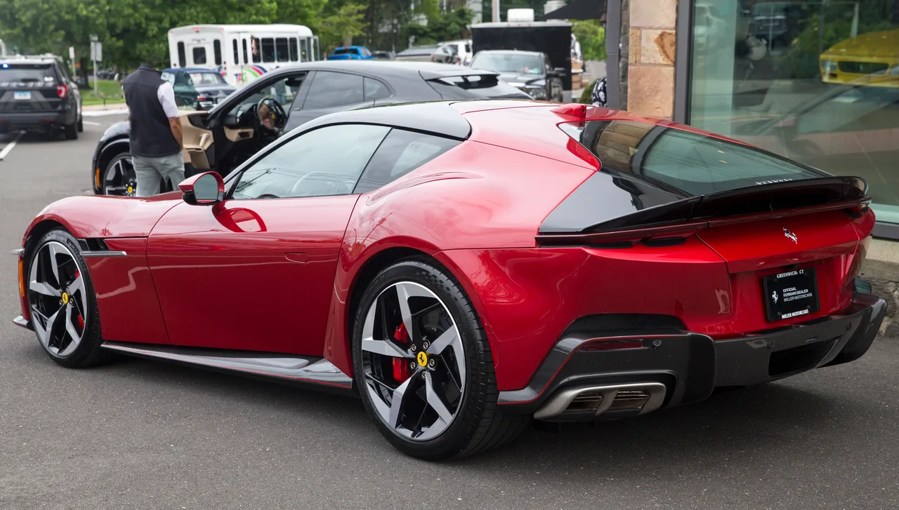
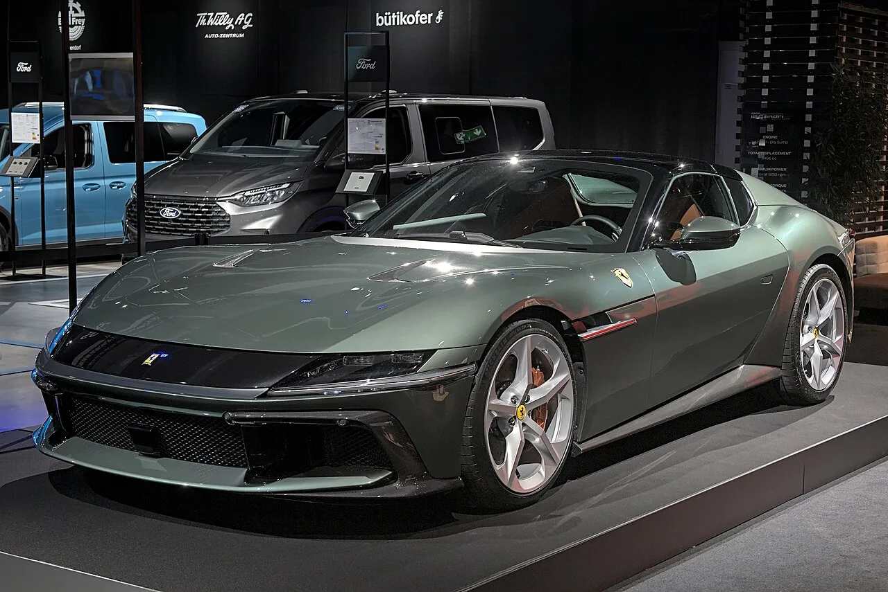
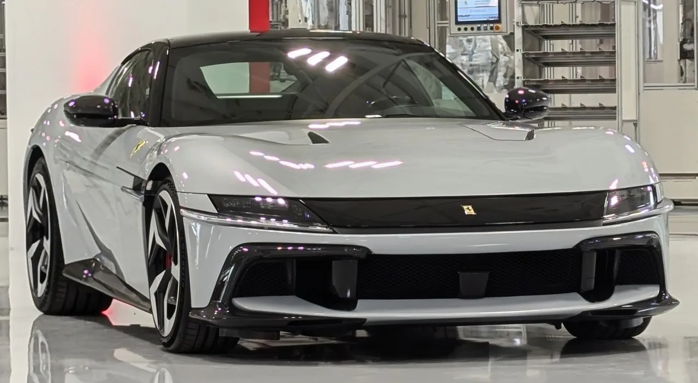

▲ 페라리 12칠린드리. 자연흡기 V12 830마력을 앞세운 현행 그랜드투어러다 ⓒ Mr.choppers, Wikimedia Commons (CC BY-SA 4.0)
미국 자동차 매체 카스쿠프스(Carscoops)에 따르면 페라리가 자연흡기 V12 그랜드투어러 12칠린드리의 고성능 파생 모델을 개발 중이다. 현재 830마력, 최고회전수 9,500rpm인 엔진이 850마력 이상으로 증강되고, 회전한계도 1만rpm 근처까지 올라갈 것으로 예상된다. 무엇보다 눈길을 끄는 대목은 기존 듀얼클러치 변속기에 클러치 페달과 게이트식 셀렉터를 추가해 수동변속기 운전 감성을 인위적으로 재현하는 옵션이 검토되고 있다는 점이다.
| 항목 | 현행 12칠린드리 | 하드코어(예상) |
|---|---|---|
| 엔진 | 6.5L 자연흡기 V12 | |
| 최고출력 | 830마력 | 850마력 이상 |
| 최고회전수 | 9,500rpm | 1만rpm 근접 |
| 변속기 | 8단 듀얼클러치 | 듀얼클러치 + 수동 감성 옵션(검토) |
| 공력 장치 | 기본 에어로 패키지 | 전면 캐너드, 대형 덕테일 스포일러 |
1. 6,500rpm 넘어야 진짜 힘이 나오는 자연흡기 V12

▲ 12칠린드리 후면. 하드코어 버전은 대형 덕테일 스포일러로 다운포스를 강화할 전망이다 ⓒ Mr.choppers, Wikimedia Commons (CC BY-SA 4.0)
12칠린드리의 6.5L 자연흡기 V12는 터보차저 없이 고회전으로 출력을 끌어올리는 페라리 특유의 엔진 철학을 계승한다. 하드코어 버전에서 예상되는 850마력 이상, 1만rpm에 근접한 회전한계는 양산차 기준으로도 극단적인 수치다. 터보 엔진처럼 저회전에서 폭발적인 토크가 나오는 대신, 회전수를 끝까지 밀어붙여야 진짜 성능이 드러나는 순수주의적 세팅을 유지할 것으로 보인다. 전면 캐너드와 대형 덕테일 스포일러 추가는 이렇게 끌어올린 속도 영역에서 안정적인 다운포스를 확보하기 위한 조치로 풀이된다.
2. 왜 다시 '가짜 수동'인가 — 사라진 감성을 되살리는 방법

▲ 12칠린드리 스파이더. 쿠페와 동일한 V12를 얹은 컨버터블 버전이다 ⓒ Alexander Migl, Wikimedia Commons (CC BY-SA 4.0)
페라리는 이미 599 GTB 이후 수동변속기 라인업을 전면 중단했다. 규제 대응과 변속 속도 경쟁 속에서 듀얼클러치가 사실상 표준이 됐기 때문이다. 그런데도 하드코어 버전에 클러치 페달과 게이트식 셀렉터를 더하는 옵션이 거론되는 이유는, 실제 기계식 수동변속기를 부활시키는 것이 아니라 듀얼클러치의 반응 속도는 유지하면서 왼발 클러치 조작감·기어노브 촉감 같은 아날로그적 경험을 시뮬레이션하려는 시도로 해석된다. 최근 몇 년간 슈퍼카 업계에서 반복적으로 등장하는 '드라이빙 감성 복원' 트렌드의 연장선이라는 평가다.
3. 국내엔 이미 '테일러메이드' 상륙 — 정식 라인업 편입은 미정

▲ 이탈리아 마라넬로의 페라리 본사 인근에서 포착된 12칠린드리 ⓒ Russell Bray's Ghost, Wikimedia Commons (CC BY-SA 4.0)
국내에서는 2026년 1월 서울 반포 페라리 쇼룸에서 한국 시장 전용 '12칠린드리 테일러 메이드' 에디션이 공개된 바 있다. 국내 공예가들이 참여해 옻칠·말총 자수 같은 전통 공예 요소를 실내에 적용한 한정판으로, 정식 판매 라인업이라기보다 브랜드 헤리티지를 강조하는 특별 프로젝트에 가깝다. 하드코어 버전의 국내 출시 여부와 가격은 아직 확인되지 않았으며, 페라리 특성상 물량 자체가 제한적이라 정식 발표 이후에도 국내 배정 대수는 소수에 그칠 가능성이 높다.
4. 정리 — 예고편에 가까운 단계, 공식 발표를 기다려야
이번 보도는 어디까지나 페라리 공식 발표 이전 해외 매체의 취재를 바탕으로 한 예상 정보다. 850마력이라는 수치와 수동 감성 변속기 옵션 모두 아직 확정되지 않았고, 출시 시기와 가격도 공개되지 않았다. 다만 페라리가 12칠린드리 라인업에 SF90급 하이브리드가 아닌 순수 내연기관 하드코어 버전을 준비하고 있다는 것 자체가, 자연흡기 V12에 대한 브랜드의 애착을 보여주는 신호로 읽힌다.